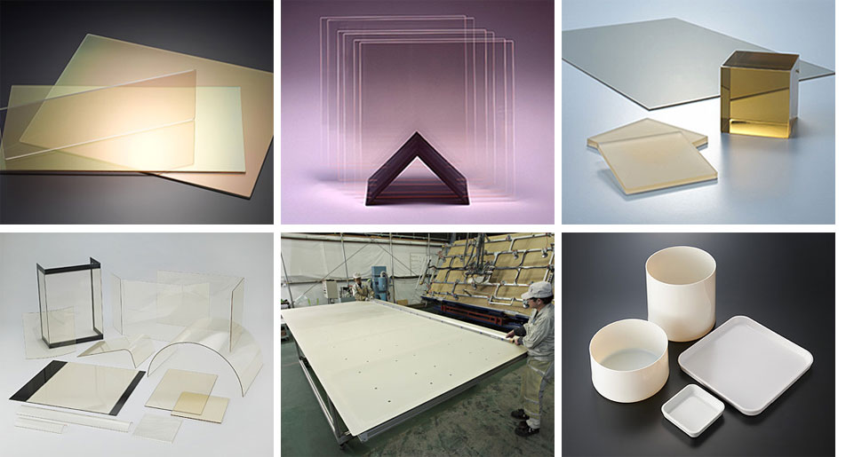

초내열결정화글라스 <네오세람>은 우수한내열충격강도, 기계적 강도, 경도, 균일한 열성, 전기적 특성 등의 특징 등을 활용하여
폭넓게 사용되고 있습니다.
성형,가공법에 따라
판재, 관, 프레스 품 등 필요한 용도의 형상으로 제공을 하고 있습니다.
스토브, 난방 창 등이 대표적인 용도입니다. 열팽창계수가 0에 가까운 특징에 전자부품의 소성용캐리어로써 사용되는
등
전자, 정보분야에도 사용 되고있습니다.
Neoceram에는 투명한 N-0, 불투명한 N-11, 총 2가지 타입이 있습니다.
특장점
- 우수한 써멀쇼크성
- 우수한 내열성 , 기공율 0
- 고정도의 표면 , 캐리어글라스용도는 8.5G 사이즈 대응가능
N-0 Neoceram은 팽창계수가 거의 ZERO에 가까운 투명 세라믹 글라스 입니다. 800℃ 이하의 온도에서 지속적인 열 사이클에서 사용이
가능합니다. N-0 판유리는 칼라 필터 기판
및 폴리실리콘 TFT 리퀴드 크리스탈 디스플레이의 마이크로 렌즈 배열 기판에 사용됩니다.
- 분야 : LCD, 통신단말장치 , LTPS /AMOLED
- 기능 / 특성 : 낮은
열팽챙계수, 내열성.
- 형태 : 판
- 용도 :LTPS /AMOLED 분야의 히터커버용 GLASS 및 얇은 기판 유리의 이송을 위한 Setter, 스토브 등 난방기구, 고온열처리장비
등
N-11 Neoreram은 팽창계수가 낮은 화이트 세라믹 글라스 입니다.
800℃ 이하의 온도에서 지속적인 열 사이클에서 사용이 가능합니다. 소성로 내의 분위기 온도 및 파티클 방지에 사용됩니다.
- 분야 : LTPS / AMOLED 분야의 MUFFLE GLASS 및 기판 유리의 이송을 위한 Setter 등
